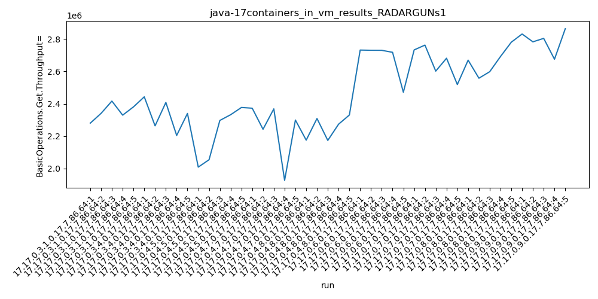
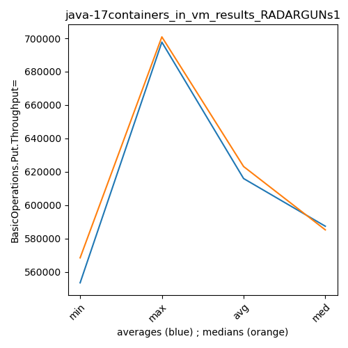
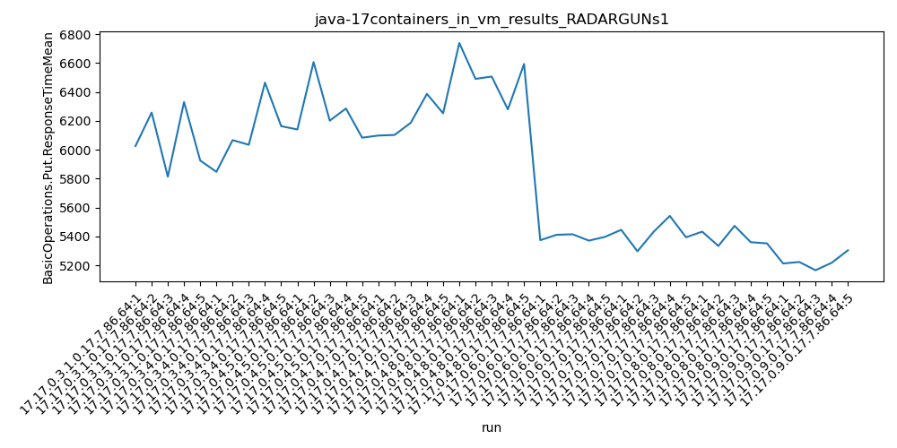

java-17 RADARGUNs1
Context at bottom
/home/jvanek/git/benchmarks-in-nested-virtualisation-toolchain/final_results/containers_in_vm_results/containers_in_vm_results_JMH
java-17
RADARGUNs1
/home/jvanek/git/benchmarks-in-nested-virtualisation-toolchain/final_results/containers_in_vm_results/containers_in_vm_results_J2DBENCH
java-17
RADARGUNs1
/home/jvanek/git/benchmarks-in-nested-virtualisation-toolchain/final_results/containers_in_vm_results/containers_in_vm_results_RADARGUNs3
java-17
RADARGUNs1
/home/jvanek/git/benchmarks-in-nested-virtualisation-toolchain/final_results/containers_in_vm_results/containers_in_vm_results_SPECJBB
java-17
RADARGUNs1
/home/jvanek/git/benchmarks-in-nested-virtualisation-toolchain/final_results/containers_in_vm_results/containers_in_vm_results_RADARGUNs1
java-17
RADARGUNs1
containers_in_vm_results_RADARGUNs1
- containers_in_vm_results_RADARGUNs1 - throughput get
- containers_in_vm_results_RADARGUNs1 - throughput put
- containers_in_vm_results_RADARGUNs1 - response mean time get
- containers_in_vm_results_RADARGUNs1 - response mean time put
containers_in_vm_results_RADARGUNs1 - throughput get
Expected number of java-17 JDKs: 9
1st avgmed_alljdks_metric:
/home/jvanek/git/benchmarks-in-nested-virtualisation-toolchain/final_results/result_processing.py /home/jvanek/git/benchmarks-in-nested-virtualisation-toolchain/final_results/containers_in_vm_results/containers_in_vm_results_RADARGUNs1 BasicOperations.Get.Throughput= False
values: [2280520, 2340981, 2416591, 2329686, 2380942, 2442800, 2263870, 2408129, 2204499, 2340157, 2009192, 2054623, 2297083, 2332487, 2377135, 2372618, 2242708, 2368585, 1927367, 2299688, 2175657, 2309115, 2173960, 2273994, 2330715, 2731432, 2730153, 2729856, 2717534, 2471121, 2732332, 2761998, 2601552, 2681060, 2518738, 2669134, 2557742, 2597922, 2691724, 2779934, 2830540, 2782190, 2803613, 2674887, 2863176]

Expected number of iterations: 5
final number of values: 45 out of 45
Pass rate: 100.0%
values: (1927367, 2863176, 2463994.222222222, 2408129)

** accuracy from all jdks and runs
more is better
MIN: 1927367
MAX: 2863176
AVG: 2463994.222222222
MED: 2408129
Relative differences 1:
MIN-MAX: 33.0 %
MIN-AVG: 22.0 %
MIN-MED: 20.0 %
MAX-MIN: -49.0 %
MAX-AVG: -16.0 %
MAX-MED: -19.0 %
AVG-MED: -2.0 %
stored to java-17.properties. sort | uniq that!
2nd avgmed_by_jdk_metric:
values: [2349744.0, 2331891.0, 2214104.0, 2242193.2, 2252688.2, 2676019.2, 2659136.0, 2659291.2, 2790881.2]

values: [2340981, 2340157, 2297083, 2299688, 2273994, 2729856, 2681060, 2669134, 2803613]
values: (2214104.0, 2790881.2, 2463994.222222222, 2349744.0)
values: (2273994, 2803613, 2492840.6666666665, 2340981)

** accuracy from all jdks where runs were avged
more is better
MIN: 2214104.0
MAX: 2790881.2
AVG: 2463994.222222222
MED: 2349744.0
Relative differences 1:
MIN-MAX: 21.0 %
MIN-AVG: 10.0 %
MIN-MED: 6.0 %
MAX-MIN: -26.0 %
MAX-AVG: -13.0 %
MAX-MED: -19.0 %
AVG-MED: -5.0 %
stored to java-17.properties. sort | uniq that!
** accuracy from all jdks where runs were medianed
more is better
MIN: 2273994
MAX: 2803613
AVG: 2492840.6666666665
MED: 2340981
Relative differences 1:
MIN-MAX: 19.0 %
MIN-AVG: 9.0 %
MIN-MED: 3.0 %
MAX-MIN: -23.0 %
MAX-AVG: -12.0 %
MAX-MED: -20.0 %
AVG-MED: -6.0 %
stored to java-17.properties. sort | uniq that!
containers_in_vm_results_RADARGUNs1 - throughput put
Expected number of java-17 JDKs: 9
1st avgmed_alljdks_metric:
/home/jvanek/git/benchmarks-in-nested-virtualisation-toolchain/final_results/result_processing.py /home/jvanek/git/benchmarks-in-nested-virtualisation-toolchain/final_results/containers_in_vm_results/containers_in_vm_results_RADARGUNs1 BasicOperations.Put.Throughput= False
values: [570104, 585241, 604108, 582409, 595231, 610754, 565932, 602073, 551082, 585057, 502262, 513677, 574282, 583085, 594286, 593130, 560660, 592113, 481848, 574928, 543897, 577272, 543514, 568478, 582664, 682816, 682573, 682457, 679448, 617680, 683035, 690496, 650368, 670199, 629711, 667216, 639477, 649469, 672923, 694980, 707647, 695525, 700844, 668753, 715770]

Expected number of iterations: 5
final number of values: 45 out of 45
Pass rate: 100.0%
values: (481848, 715770, 615988.3111111111, 602073)

** accuracy from all jdks and runs
more is better
MIN: 481848
MAX: 715770
AVG: 615988.3111111111
MED: 602073
Relative differences 1:
MIN-MAX: 33.0 %
MIN-AVG: 22.0 %
MIN-MED: 20.0 %
MAX-MIN: -49.0 %
MAX-AVG: -16.0 %
MAX-MED: -19.0 %
AVG-MED: -2.0 %
stored to java-17.properties. sort | uniq that!
2nd avgmed_by_jdk_metric:
values: [587418.6, 582979.6, 553518.4, 560535.8, 563165.0, 668994.8, 664761.8, 664813.0, 697707.8]

values: [585241, 585057, 574282, 574928, 568478, 682457, 670199, 667216, 700844]

values: (553518.4, 697707.8, 615988.3111111111, 587418.6)
values: (568478, 700844, 623189.1111111111, 585241)

** accuracy from all jdks where runs were avged
more is better
MIN: 553518.4
MAX: 697707.8
AVG: 615988.3111111111
MED: 587418.6
Relative differences 1:
MIN-MAX: 21.0 %
MIN-AVG: 10.0 %
MIN-MED: 6.0 %
MAX-MIN: -26.0 %
MAX-AVG: -13.0 %
MAX-MED: -19.0 %
AVG-MED: -5.0 %
stored to java-17.properties. sort | uniq that!
** accuracy from all jdks where runs were medianed
more is better
MIN: 568478
MAX: 700844
AVG: 623189.1111111111
MED: 585241
Relative differences 1:
MIN-MAX: 19.0 %
MIN-AVG: 9.0 %
MIN-MED: 3.0 %
MAX-MIN: -23.0 %
MAX-AVG: -12.0 %
MAX-MED: -20.0 %
AVG-MED: -6.0 %
stored to java-17.properties. sort | uniq that!
containers_in_vm_results_RADARGUNs1 - response mean time get
Expected number of java-17 JDKs: 9
1st avgmed_alljdks_metric:
/home/jvanek/git/benchmarks-in-nested-virtualisation-toolchain/final_results/result_processing.py /home/jvanek/git/benchmarks-in-nested-virtualisation-toolchain/final_results/containers_in_vm_results/containers_in_vm_results_RADARGUNs1 BasicOperations.Get.ResponseTimeMean True
values: [1532, 1544, 1555, 1515, 1515, 1497, 1590, 1526, 1486, 1557, 1584, 1615, 1578, 1549, 1556, 1552, 1570, 1597, 1667, 1662, 1653, 1574, 1581, 1670, 1546, 1341, 1338, 1337, 1337, 1337, 1368, 1320, 1369, 1340, 1340, 1355, 1316, 1332, 1386, 1298, 1269, 1280, 1254, 1251, 1279]

Expected number of iterations: 5
final number of values: 45 out of 45
Pass rate: 100.0%
values: (1251, 1670, 1460.4, 1515)

** accuracy from all jdks and runs
more is worse
MIN: 1670
MAX: 1251
AVG: 1460.4
MED: 1515
Relative differences 1:
MIN-MAX: 33.0 %
MIN-AVG: 14.0 %
MIN-MED: 10.0 %
MAX-MIN: -25.0 %
MAX-AVG: -14.0 %
MAX-MED: -17.0 %
AVG-MED: -4.0 %
stored to java-17.properties. sort | uniq that!
2nd avgmed_by_jdk_metric:
values: [1532.2, 1531.2, 1576.4, 1609.6, 1604.8, 1338.0, 1347.4, 1337.4, 1266.6]

values: [1532, 1526, 1578, 1597, 1581, 1337, 1340, 1332, 1269]

values: (1266.6, 1609.6, 1460.4, 1531.2)
values: (1269, 1597, 1454.6666666666667, 1526)

** accuracy from all jdks where runs were avged
more is worse
MIN: 1609.6
MAX: 1266.6
AVG: 1460.4
MED: 1531.2
Relative differences 1:
MIN-MAX: 27.0 %
MIN-AVG: 10.0 %
MIN-MED: 5.0 %
MAX-MIN: -21.0 %
MAX-AVG: -13.0 %
MAX-MED: -17.0 %
AVG-MED: -5.0 %
stored to java-17.properties. sort | uniq that!
** accuracy from all jdks where runs were medianed
more is worse
MIN: 1597
MAX: 1269
AVG: 1454.6666666666667
MED: 1526
Relative differences 1:
MIN-MAX: 26.0 %
MIN-AVG: 10.0 %
MIN-MED: 5.0 %
MAX-MIN: -21.0 %
MAX-AVG: -13.0 %
MAX-MED: -17.0 %
AVG-MED: -5.0 %
stored to java-17.properties. sort | uniq that!
containers_in_vm_results_RADARGUNs1 - response mean time put
Expected number of java-17 JDKs: 9
1st avgmed_alljdks_metric:
/home/jvanek/git/benchmarks-in-nested-virtualisation-toolchain/final_results/result_processing.py /home/jvanek/git/benchmarks-in-nested-virtualisation-toolchain/final_results/containers_in_vm_results/containers_in_vm_results_RADARGUNs1 BasicOperations.Put.ResponseTimeMean True
values: [6025, 6257, 5813, 6330, 5925, 5847, 6066, 6034, 6464, 6163, 6140, 6606, 6201, 6285, 6083, 6098, 6102, 6186, 6386, 6252, 6738, 6490, 6506, 6279, 6593, 5374, 5411, 5415, 5371, 5397, 5446, 5297, 5432, 5542, 5394, 5433, 5334, 5473, 5360, 5352, 5213, 5223, 5166, 5218, 5304]

Expected number of iterations: 5
final number of values: 45 out of 45
Pass rate: 100.0%
values: (5166, 6738, 5844.977777777778, 5925)

** accuracy from all jdks and runs
more is worse
MIN: 6738
MAX: 5166
AVG: 5844.977777777778
MED: 5925
Relative differences 1:
MIN-MAX: 30.0 %
MIN-AVG: 15.0 %
MIN-MED: 14.0 %
MAX-MIN: -23.0 %
MAX-AVG: -12.0 %
MAX-MED: -13.0 %
AVG-MED: -1.0 %
stored to java-17.properties. sort | uniq that!
2nd avgmed_by_jdk_metric:
values: [6070.0, 6114.8, 6263.0, 6204.8, 6521.2, 5393.6, 5422.2, 5390.4, 5224.8]

values: [6025, 6066, 6201, 6186, 6506, 5397, 5432, 5360, 5218]

values: (5224.8, 6521.2, 5844.977777777778, 6070.0)
values: (5218, 6506, 5821.222222222223, 6025)
** accuracy from all jdks where runs were avged
more is worse
MIN: 6521.2
MAX: 5224.8
AVG: 5844.977777777778
MED: 6070.0
Relative differences 1:
MIN-MAX: 25.0 %
MIN-AVG: 12.0 %
MIN-MED: 7.0 %
MAX-MIN: -20.0 %
MAX-AVG: -11.0 %
MAX-MED: -14.0 %
AVG-MED: -4.0 %
stored to java-17.properties. sort | uniq that!
** accuracy from all jdks where runs were medianed
more is worse
MIN: 6506
MAX: 5218
AVG: 5821.222222222223
MED: 6025
Relative differences 1:
MIN-MAX: 25.0 %
MIN-AVG: 12.0 %
MIN-MED: 8.0 %
MAX-MIN: -20.0 %
MAX-AVG: -10.0 %
MAX-MED: -13.0 %
AVG-MED: -3.0 %
stored to java-17.properties. sort | uniq that!
/home/jvanek/git/benchmarks-in-nested-virtualisation-toolchain/final_results/containers_in_vm_results/containers_in_vm_results_DACAPO
java-17
RADARGUNs1
pass rates:
containers_in_vm_results_RADARGUNs1=100.0%
Context:
- containers_in_vm_results
- RADARGUNs1